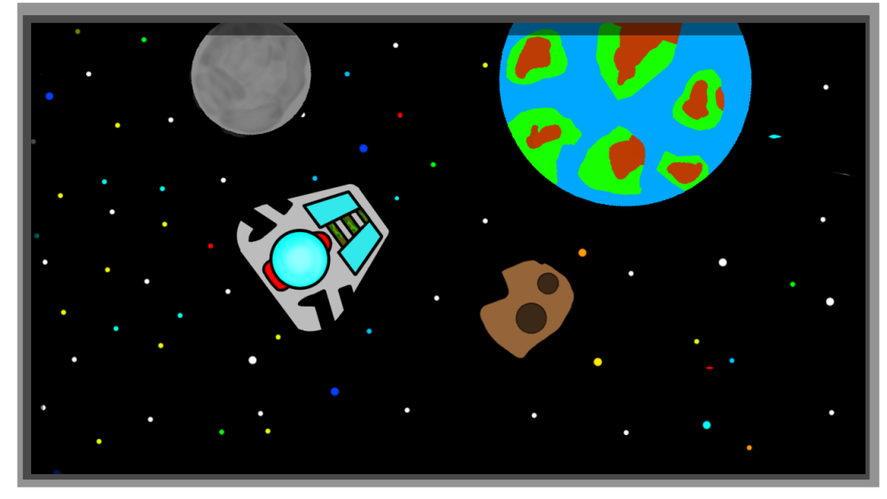

<!DOCTYPE html>
<html>
	<head>
		<link href="https://cdn.jsdelivr.net/npm/bootstrap@5.0.0-beta1/dist/css/bootstrap.min.css" rel="stylesheet" integrity="sha384-giJF6kkoqNQ00vy+HMDP7azOuL0xtbfIcaT9wjKHr8RbDVddVHyTfAAsrekwKmP1" crossorigin="anonymous">
			<title>GaLgEsp's Games | Space</title>
			<meta name="keywords" content="Space">
			<meta name="copyright" content="GaLgEsp Indie Games">
			<meta charset="utf-8">
	</head>
    <body class="bg-dark text-center m-1 text-light">
		<headeer>
			<a href="https://galgesp.github.io" class="btn btn-success">Home</a>
            <a href="eng.html" class="btn btn-success">English</a><br><br>
            <h1>Project: Space</h1>
            
		</header>
		<footer>
            <h3>Disfrutad de un nuevo juego con <b>4 posibles modos de juego</b>, aventura, survival, NPCs y <b>Battle Royale contra otros jugadores (NO GARANTIZADO).</b></h3><br><br>
            <h2>Posibilidades de los modos:</h2>
                <b>Aventura 60%</b><br>
                <b>Survival 80%</b><br>
                <b>Contra NPCs 95%</b><br>
                <b>Battle Royale 35%</b><br>
            <h6><b>Esas son la probabilidad de que salgan en el juego.</b></h6><br>
            <h3>¿Como se juega?</h3>
                    Por ahora es fácil solo necesitas un mouse con los siguientes botones: Click izquierdo, click derecho y
                    la rueda (Es un boton de verdad) si NO hay ruedita, tendrás que usar el teclado, si no posee click izquierdo o derecho,
                    puedes explorar el mapa semi aleatorio, los ''Black Holes'' te eliminan de forma casi instantanea, solo te atraen a partir
                    de cierta distancia. Habrán portales por así decirlo para cambiar de dimension o lugar del cosmos.<br><br>
            <h3><b>NPCs:</b></h3>
                NPC o non-playable character (Personaje NO jugador) es el termino que se utiliza en los videojuegos para referirse a los
                personajes que interactuan con el jugador o que estan en el fondo del nivel, un ejemplo son los enemigos, los vendedores,
                los personajes inmoviles con colision o sin colision.<br><br>
            <h3>Skins:</h3>
                Las skins cambian las estadisticas del jugador, pero no aperecen en Battle Royale, estos se compran con un minimo de nivel
                y un minimo de dinero del juego.<br><br>
            <h3>Niveles</h3>
                Como dije anteriormente, hay LV (Niveles), estos se consiguen con XP (Experencia), las formas de conseguir XP son
                destruyendo asteroides, eliminando enemigos (Recomendado) y combustible gastado. <b>Cuanto más nivel seas, más costará subir de LV</b><br><br>
            <h3>Demos teccnicas/snapshots</h3>
                Las demos tecnicas o snapshots son versiones de prueba con posibles bugs, se descargan por separado debajo de la version completa.<br><br>
            <h3>¿Qué se espera?</h3>
                Se espera un juego de mejor calidad en comparación a anteriores juegos hechos por mi, mundo semi aleatorio, un battle royale con mapa predefinido
                para evitar una generación de calidad poble, el Battle Royale puede que no salga nunca... pero el resto de modos sí.<br><br>
            <h3>Mundo aleatorio:</h3>
                El mundo NO es completamente aleatorio pero los asteroides y posiciones de los planetas sí lo son.
            <br><br>
			<a href="https://gamejolt.com/games/Space/646791" class="btn btn-warning">GameJolt</a><br><br>
		<h6> © GaLgEsp Indie Games </h6>
		</footer>
	</body>
</html>